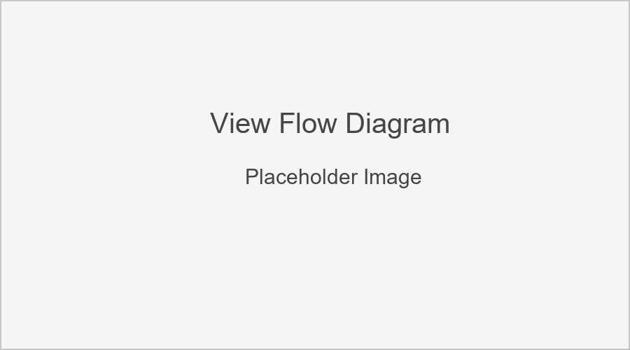

Views
This section documents the view functions and classes in the Quiz Game application. Views handle the HTTP requests, perform business logic, and return appropriate responses.
View Flow Diagram
{kind=link}
The diagram above illustrates the flow between different views in the application.
Index View
Category List View
Quiz Start View
- class QuizStartView
View to handle the start of a new quiz.
This class-based view creates a new QuizAttempt and redirects to the first question. It handles the form submission from the quiz selection page.
Question View
Results View
User Stats View
URL Patterns
The application defines the following URL patterns:
app_name = 'quiz' # Application namespace
urlpatterns = [
# Home page / index view
path('', views.IndexView.as_view(), name='index'),
# List of quiz categories
path('categories/', views.CategoryListView.as_view(), name='categories'),
# Start a new quiz
path('start/', views.QuizStartView.as_view(), name='start'),
# Answer quiz questions
path('question/', views.QuestionView.as_view(), name='question'),
# View quiz results
path('results/<int:quiz_id>/', views.ResultsView.as_view(), name='results'),
# User statistics dashboard
path('stats/', views.UserStatsView.as_view(), name='user_stats'),
]
Session Management
The application uses Django’s session framework to maintain quiz state:
quiz_questions: List of question IDs for the current quiz
current_question_index: Index of the current question (0-based)
quiz_attempt_id: ID of the current QuizAttempt
These session keys are set when a quiz starts and cleared when it completes.
Data Visualization
The views utilize pandas, matplotlib, and seaborn for data analysis and visualization:
Data is retrieved from the database and converted to pandas DataFrames
Analysis is performed (grouping, aggregation, statistics)
Visualizations are created with matplotlib/seaborn
Images are converted to base64-encoded strings for embedding in HTML
This approach allows for rich data visualization without requiring JavaScript charting libraries on the frontend.